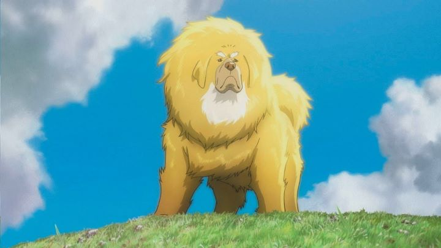

Sentai Filmworks and Maiden Japan sometimes make unusual licensing choices for anime in North America. One that came out of nowhere was "The Tibentan Dog," a 2011 anime film by Madhouse, released on Bluray in 2018. Even after that, the English Wikipedia page is only one paragraph long; it's hard to find any information on the Japanese/Chinese co-production. Yes, the film is a co-production, if the title wasn't a giveaway. This is usually a cause for concern, as China had long struggled to get a foothold in film culture outside the occasional martial-arts movie. In other attempts of animation, the quality of the film is usually poor, either due to inexperience or, if a co-production with an external team, also due to inexperience and disinterest in the material. And it's hard to avoid mention of such films being instruments to promote Chinese culture and little else... this isn't unusual (most English-speaking films are overwhelmingly set in America or Britain), but can be distracting. In the case the "The Tibentan Dog," most of these fears are unwarrented. It manages to take advantage of its setting in exactly the right way, telling an all-ages coming-of-age story of a boy and a dog in the rural Tibentan mountains. And production values, while not always at their best, are solid enough in quality, with directorial intentions to make something that could be compared to a Studio Ghibli movie, or more closely, to Japanese director Mamoru Hosoda. It doesn't quite reach those ambitions, but it comes close.At the beginning of the movie, Tenzing (a nine-year-old boy) is guided through the misty mountains to his father. His parents had separated when he was young, with Tenzing staying with his mother in the more modern cities, but after his mother's death, he must live with his estranged father, who works as a doctor for a small native community. Wisely, the movie doesn't really show what the "modern city" was like, so the time period of the film is unclear, possible to set at any time in the last millenia. Initially distrusting of his father (not understanding why he didn't stay with them in the city), Tenzing struggles to this new way of life: people live in tents and old ruins, raise their own sheep for food and wool, and rely on horses to travel even to their neighbors. It's during this time that Tenzing discovers the wild mountain dogs of Tibet. Loosely based on real dogs native to the region, they are depicted as massive, proud animals, like lions in the mist. Typically, they pose no threat to humans, but have their own culture and hierarchy, and are shown to attack outsider dogs they distrust. One large golden dog that the local people don't recognize saves Tenzing from wolves that attacked his sheep, and when it returns, it defends itself against an established heard of dogs, led by a fierce "king dog." After this fight, Tenzing convinces his father and neighbors to help both dogs involved in the fight heal, and the golden dog becomes his best friend. During this time, a mysterious creature is attacking and killing townspeople and their livestock, and the golden dog, being the only outsider, becomes suspect.  It's a familiar tale for anyone who watches "dog" movies. Also for those who watch a log of coming-of-age movies. The general theme is of getting used to an unfamiliar environment where you don't belong, and the natural but unwarrented distrust from natives who see you as an outsider. But it's effective, and works well here thanks to the setting. Exaggerated or not, Tibet is beautifully realized. It isn't a common setting for English viewers, so it's culture, clothing, and way of life is fascinating, and treated with the right amount of respect, humor and wonder. I don't think "The Tibetan Dog" would have been as compelling if it wasn't set in Tibet.The movie is well-suited to children, but can be of interest to adults as well for the culture on display. Enjoyment from either party will largely be dependent on one question: do you like dogs? The dogs of different breeds are well designed and animated, expressive enough to understand without speech. They aren't just a selling-point, but are important characters to the story in the same way humans are. But their appeal is undeniable: if marketing had been stronger, I'm certain the film would have been able to sell many plush toys of the dogs. I'd love to have a life-size model in my house! And while their appearance in marketing material might make them seem "magical," there isn't any real magic involved in the film, with the dogs feeling grounded and realistic.Visually, it's the distinct culture of Tibet that stands out, with clothing styles, patterns, and household items giving the movie a unique personality. Animation quality varies, with a few ambitious shots being too ambitious for their own good: an early fast-tracking shot of the wind in the mountains doesn't look as good as the best Madhouse films. But animation is generally better than average, a proud piece of output for a studio with a history of good-looking anime. And yes, it does look like Japanese anime, so fans exclusive to that medium should be pleased.The soundtrack and voice-acting is probably the weakest part of the movie. It's fine, but a bit too general, and a missed opportunity. With the English dub, it struggles to portray the dialect of the people in the Tibetan mountains, despite the intent being clear in the script. It's like hearing a native-American's speech being spoken from someone in Texas. The plot of "The Tibetan Dog" might be typical, but otherwise the movie is a wholly original and enjoyable family film. With majestic dogs that represent the definition of "good boy," it's easy to recommend, but while you might come for the animals, you'll stay, and return, for the love of the land.
- "Ani" More reviews can be found at : https://2danicritic.github.io/ Previous review: review_The_Three_Caballeros Next review: review_The_Triplets_of_Belleville